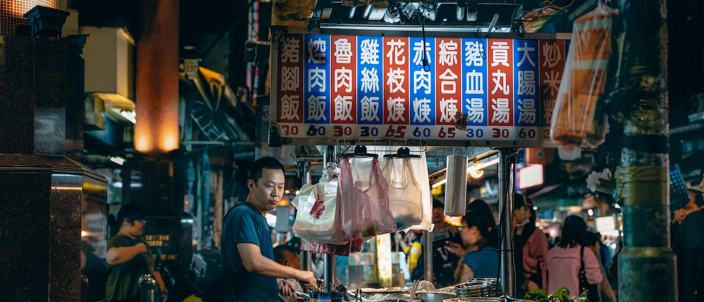
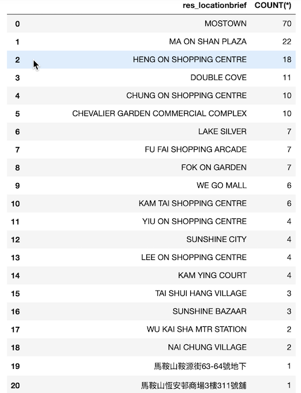
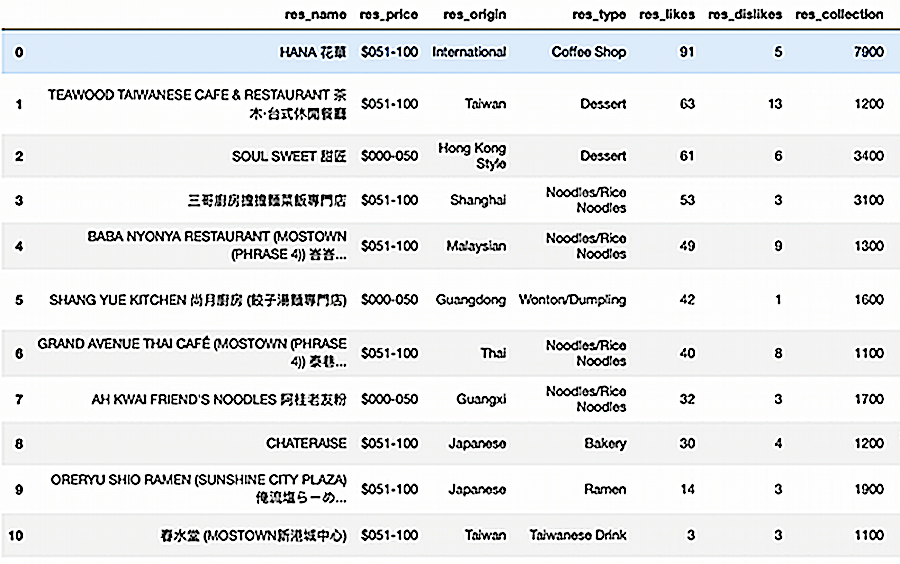

My BEST CHOICE IN
MA ON SHAN
MA ON SHAN
As a student living in Ma On Shan, I know that it is not as easy to find restaurants in Ma On Shan as it is in Mongkok and Hong Kong Island - the restaurants are far apart from each other.
So for me, it is not only important to find the best restaurants, but preferably also the place with the highest concentration of restaurants and the most variety - So that I'm not running around all the time when I'm out and having fun. Thus, I did the following filtering and analysis.
So for me, it is not only important to find the best restaurants, but preferably also the place with the highest concentration of restaurants and the most variety - So that I'm not running around all the time when I'm out and having fun. Thus, I did the following filtering and analysis.

Where has the most restaurants in Ma On Shan?
After looking at the addresses of restaurants in Ma On Shan,
it is easy to see that most of the restaurants are centered around shopping malls.
By using each mall as a landmark, it is easy to see where the greatest concentration of restaurants is located.
From the data of each mall, the place with the largest and most concentrated number of restaurants is MOSTOWN- it has 70 restaurants on openrice, far more than any other mall.
And from the 20th location onwards, there is no concentration of restaurants.
By using each mall as a landmark, it is easy to see where the greatest concentration of restaurants is located.
From the data of each mall, the place with the largest and most concentrated number of restaurants is MOSTOWN- it has 70 restaurants on openrice, far more than any other mall.
And from the 20th location onwards, there is no concentration of restaurants.

What is my best choice here?
After sifting through restaurants with collections greater than a thousand,
I chose the ones that fit my spending level: 0-100.
Finally, I got these 11 restaurants ordered by customer likes.
As the table shows, now I can taste a lot of high-quality food in just one place.
Finally, I got these 11 restaurants ordered by customer likes.
As the table shows, now I can taste a lot of high-quality food in just one place.